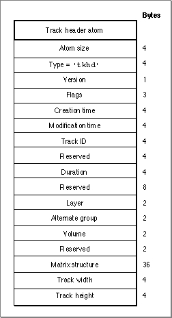

Track Header Atoms
The track header atom specifies the characteristics of a single track within a movie. A track header atom contains asizefield that specifies the number of bytes and atypefield that indicates the format of the data (defined by the atom type,'tkhd'). Figure 4-8 shows the structure of the track header atom.Figure 4-8 The layout of a track header atom

The track header atom contains the track characteristics for the track, including temporal, spatial, and volume information. You define a track header atom by specifying these elements:
- Size. A long integer that specifies the number of bytes in this track header atom.
- Type. A long integer that specifies the type of data in this track header atom (defined by the atom type,
'tkhd').- Version. A 1-byte specification of the version of this track header.
- Track header flags. Three bytes that are reserved for the track header flags, which adjust the remaining fields in the track header according to the kind of movie track you specify with the following enumeration:
enum { TrackEnable = 1<<0, /* enabled track */ TrackInMovie = 1<<1, /* track in playback */ TrackInPreview = 1<<2,/* track in preview */ TrackInPoster = 1<<3 /* track in poster */ };
- Creation time. A long integer that indicates (in seconds since midnight,
January 1, 1904) when the track header was created.- Modification time. A long integer that indicates (in seconds since midnight,
January 1, 1904) when the track header was changed.- Track ID. A long integer that specifies the value to use for the track ID number.
- Reserved. A long integer that is reserved for use by Apple. Set the value of this
field to 0.- Duration. The duration of this track (in movie time).
- Reserved. An 8-byte value that is reserved for use by Apple. Set the value of this
field to 0.- Layer. The priority of playing this track in a movie. When it plays a movie, the Movie Toolbox displays the movie's tracks according to their layer--tracks with lower layer numbers are displayed in front; tracks with higher layer numbers are displayed in back.
- Alternate group. A short integer that specifies a collection of movie tracks that contain alternate data for one another. QuickTime chooses one track from the group to be used when the movie is played. The choice may be based on such considerations as playback quality or language and the capabilities of the computer.
- Volume. A short integer that indicates how loudly this track's sound is to be played.
- Reserved. A short integer that is reserved for use by Apple. Set the value of this
field to 0.- Matrix. The matrix structure associated with this track. See Figure 4-6 on page 4-8 for an illustration of a matrix structure.
- Track width. A fixed number that specifies the width of this track.
- Track height. A fixed number that indicates the height of this track.